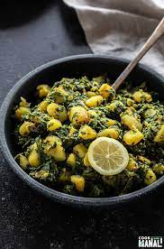

Spinach Saag Aloo
Vegan Saag Aloo Recipe

Vegan Saag Aloo (with spinach and potatoes)
Here I'll share with you a recipe to make my favorite vegan Saag Aloo! Saag Aloo is an indian dish comprised primarily of curry spices, spinach, potatoes, and cream. This is a very flaverful and hearty dish!
Ingredients
- 1/2 cup soy creamer
- 1/3 cup raw unsalted cashews
- 2 large red potatoes diced
- 3 TBSP oil
- 1 yellow ontion, finely diced
- 4 cloves garlic, finely chopped
- 1/2tsp garam masala
- 1/2 tsp ground tumeric
- 1/4 tsp ground coriander
- 1/4 tsp ground cumin
- 1/2 tsp salt
- 2 TBSP fresh ginger, finely grated
- 6 cups packed spinach
- 1/4 cup lemon juice
Preparation
- Blend cashews and creamer in a high powered blender until smooth. Set aside.
- Parboil cubed potatoes in salted water for 7 or 8 minutes.
- Heat a large saute pan over medium heat, add oil and saute onions and garlic until soft.
- Add garam masala, tumeric, coriander, cumin, salt, and cooked potatoes.
- Continue cooking about 5 minutes, or until golden. Add ginger and cook 2 more minutes.
- Add spinach in bunches, stirring occasionally to wilt. Add lemon juice. Continue stirring until spinach is completely wilted.
- Add cashew cream and a pinch of ginger to pan and cook until potatoes have softened, about 3 minutes. Season with a more salt and enjoy!
More Recipes Here